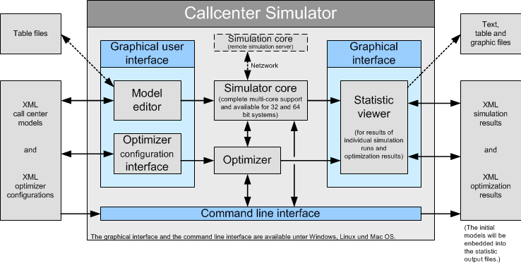

The simulator can read call center models as xml files and also write the simulation results in the form of xml files. But due to the built-in the graphical interface the manual handling of these data files often is unnecessary at all. On the other side the simulator can also be controlled via the fully documented exchange formats, if the simulator is used in a larger reporting system.
